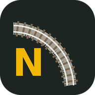

N
Gleisplaner
▾
2D
3D
Plan
+
−
⤢
🚂
↶
Zurück
↷
Vorwärts
✕
Löschen
⧉
Kopieren
⤓
Einfügen
⟷
Verbinden
⌖
Start
−
+80 mm
⏸
69 km/h
↺
Links herum
Rechts herum
↻
⇄
✕
Auf die Platte tippen oder den gelben Pfeil ziehen
Plan
Schließen

Gleisplaner als App
Auf den Startbildschirm legen – läuft dann im Vollbild und offline.
Installieren
✕
Neue Version verfügbar
Neu laden